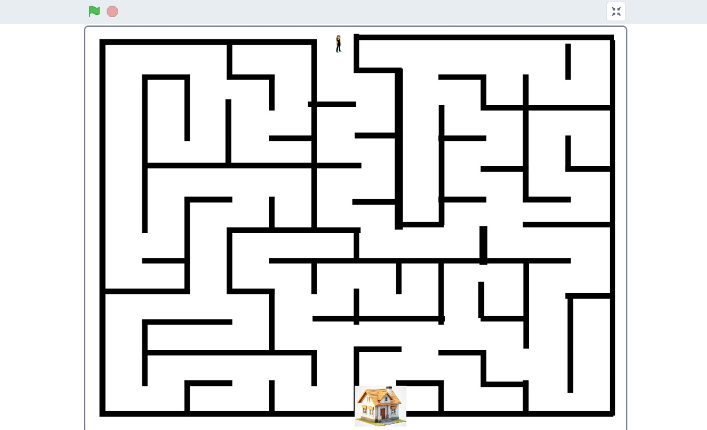
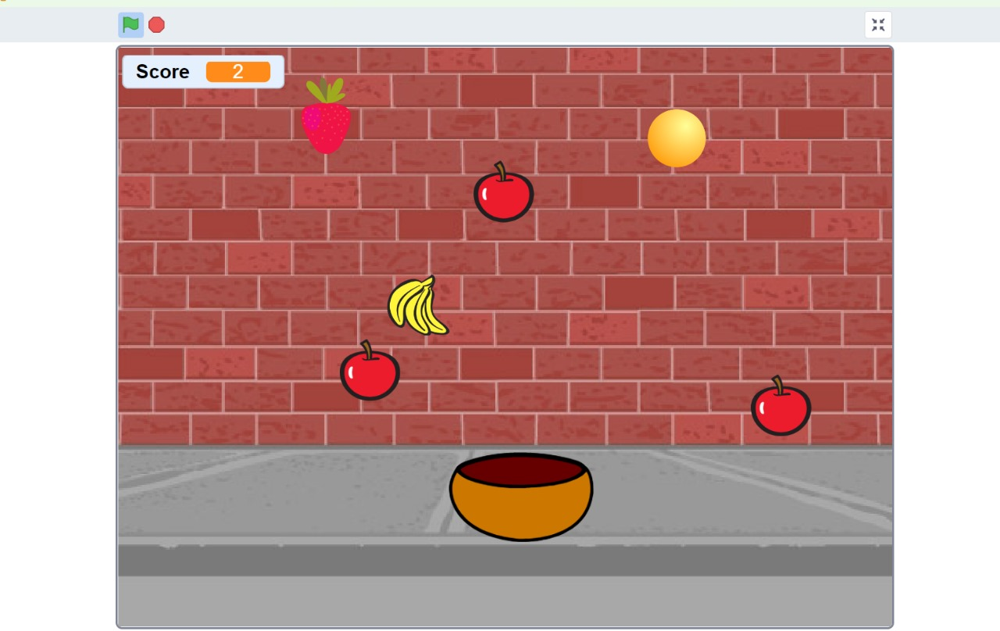

Scratch 3 is a beginner-friendly, block-based programming platform that allows users to create interactive stories, games, and animations. For this project, I developed three unique Scratch programs:
In this game, I designed a maze where players navigate a sprite using arrow keys while avoiding obstacles. I implemented boundary detection and collision logic to ensure a smooth gameplay experience.
A fun challenge where a basket moves left and right to catch falling apples. I used loops and conditional statements to progressively increase the difficulty.
An interactive storytelling project featuring animated characters, dialogues, sound effects, and animations to create an engaging Oreo-themed adventure.  
By working on these projects, I improved my understanding of event handling, loops, conditionals, and sprite interactions, making Scratch 3 an exciting and creative tool for learning programming.
Through these projects, I gained a deeper understanding of event handling, loops, conditionals, and sprite interactions. Scratch 3 proved to be an excellent tool for learning the fundamentals of programming in a fun and creative way.
MIT App Inventor is a visual programming environment that simplifies mobile app development. For this project, I designed an Attendance App featuring a face camera integration to capture attendance along with date and time.
Through this project, I learned how to work with device hardware integration (camera and clock components), UI design, and data storage. This experience enhanced my ability to build real-world applications using block-based programming.
Completing these projects has been a valuable learning experience. Scratch 3 allowed me to experiment with game logic and animations, while MIT App Inventor introduced me to mobile app development. These projects have strengthened my problem-solving skills and expanded my knowledge of interactive programming.